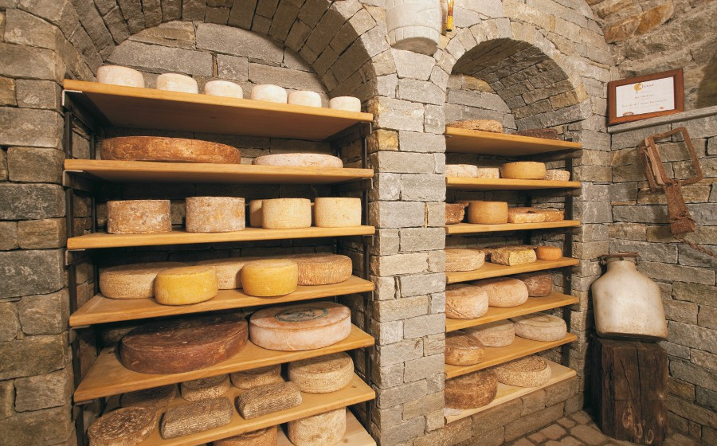

Yakov Touchini's metamorphosis from small-time mobster into award-winning cheesemaker was years in the making. Mr. Touchini is involved in every step of the process, from shepherding his flock to marketing his masterpiece cheeses. Cesar, his dog, is the only partner in the enterprise. Here you see the many delectable cheeses resting comfortably in the cellar of the old Touchini homestead.
